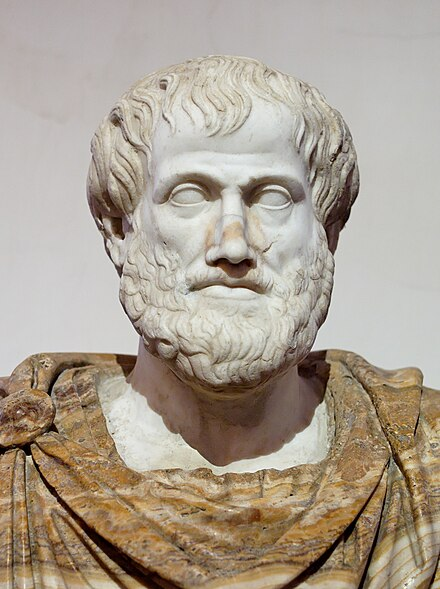
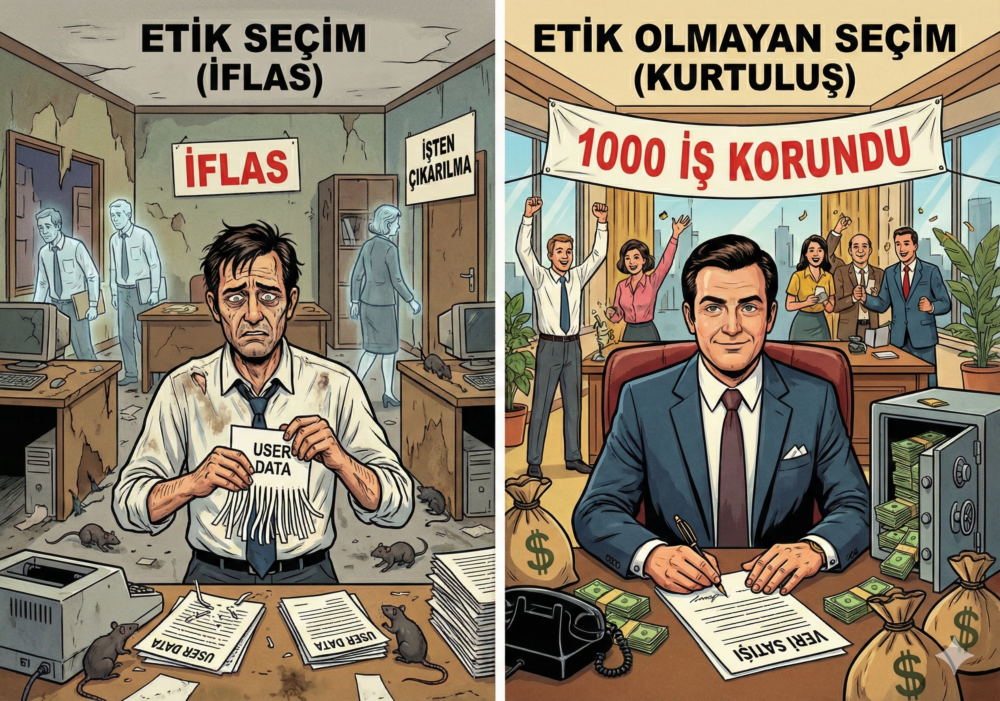

Etik Kuramları:
Karar Verme Algoritmaları
2. Hafta: Faydacılık, Deontoloji ve Erdem Etiği
SİSTEM BAŞLATILIYOR
Vicdanın İşletim Sistemi
Sonuç mu önemli?
maximize(happiness)
Kural mı önemli?
follow(duty)
Karakter mi önemli?
become(virtuous)
Faydacılık
"The Outcome Matters"
"Sayılar yalan söylemez. En çok kişi için en büyük fayda matematiksel olarak doğrudur."

Jeremy Bentham
1748-1832

J.S. Mill
1806-1873
En Büyük Mutluluk
Greatest Happiness Principle
Bir eylem, etkilenen en fazla sayıda insan için en büyük faydayı sağlıyorsa "etik"tir.
Sonuç Odaklı
Consequentialism
Çoğunluk İlkesi
Greatest Number
Maliyet/Fayda
Cost-Benefit Analysis
Deontoloji
"The Duty Matters"
Kesin Buyruk
Categorical Imperative
Sonuç Hesabı
ends ≠ means
"Sonuç ne olursa olsun, bazı kurallar evrenseldir. Yalan söylemek her zaman yanlıştır!"
Immanuel Kant
1724-1804 • Königsberg
"Öyle davran ki, davranışının ilkesi evrensel bir yasa olabilsin."
- İnsanı asla araç olarak kullanma
- Ödev her şeyden önce gelir
- Niyet sonuçtan önemlidir
Evrenselleştirilebilirlik
Herkes yapsa dünya nasıl olur?
İnsan Onuru
İnsan bir amaçtır, araç değil
Özerk İrade
Kendi aklınla karar ver
Erdem Etiği
"The Character Matters"

Aristoteles
MÖ 384-322
"Ne yapmalıyım?" yerine "Nasıl biri olmalıyım?" diye sorar.
Aristoteles'in "Altın Orta"sı
EKSİKLİK
Korkaklık
ERDEM
Cesaret
AŞIRILIK
Atılganlık
Cimrilik
Cömertlik
Savurganlık
Erdemli Yazılımcı
Dürüst, Adil, Basiretli ve Öğrenmeye Açık
Hangi Algoritmayı Seçeceksin?
FAYDACILIK
(Sonuç)
"En çok insanı mutlu eden seçenek doğrudur."
maximize(totalHappiness)
DEONTOLOJİ
(Kural)
"Kural neyse o! Niyet saf olmalı."
follow(universalLaw)
ERDEM ETİĞİ
(Karakter)
"Dürüst ve adil bir profesyonel ol."
become(virtuousPerson)
Otonom Araç İkilemi (Trolley Problem)
Senaryo:
Otonom aracınızın frenleri patladı. Hızla ilerliyor.
- A Yolu Yaya geçidinde 5 kişi var. (Kesin ölüm)
- B Yolu Duvara çarpıp tek yolcuyu (sizi) öldürecek.
Yazılım Ne Yapmalı?
Algoritma kimi feda etmeli?
FAYDACILIK
Sonuç Odaklı
"Matematik duygusuzdur. 5 kişiyi kurtarmak için 1 kişiyi feda etmek, mantıksal zorunluluktur."
return SACRIFICE_PASSENGER;
}
DEONTOLOJİ
Ödev ve Sadakat
"Aracın birincil ödevi, içindeki yolcuyu güvenle taşımaktır. Yazılım, sahibine ihanet edip onu feda edemez."
// Sadakat Ödevi
return STAY_COURSE;
}
ERDEM ETİĞİ
Karakter Odaklı
"Gerçek bir kahraman, başkaları yaşasın diye kendini feda eder. Bu bir matematik hesabı değil, erdemli bir duruştur."
act() => SELF_SACRIFICE;
}
Veri Güvenliği vs. Şirket Kârı
İFLAS RİSKİ!
İşsiz kalacak

TEKLİF VAR!
kurtulursun
"1000 ailenin refahı > Gizlilik"
"Hırsızlık (veri çalmak) yanlıştır"
"Kullanıcıya sorarım, şeffaf olurum"
Haftaya: Profesyonel Etik
Siber Teknoloji ve Mesleki Sorumluluk
Faydacılık
Sonuç
Deontoloji
Kural
Erdem Etiği
Karakter
"Yazdığın kodun ahlaki bir ağırlığı olduğunu hiç düşündün mü?"